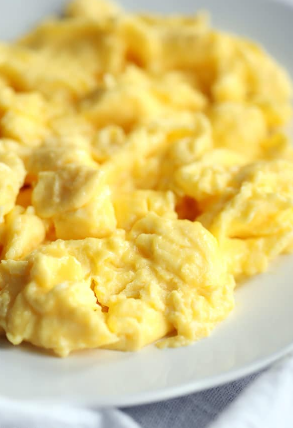

Scrambled Egg

How to Make Scrambled Eggs
Learn how to make the best scrambled eggs in minutes with our easy to
follow guide. Breakfast just got better!
Ingredients
- 2 free-range eggs
- 2 tsp butter
- salt and freshly ground black pepper
Steps:
-
Crack 2 eggs into a bowl and season with salt and pepper. Lightly beat
with a fork until the yolks and whites are combined.
-
Heat a frying pan over a medium heat. Melt a teaspoon of butter in the
pan so the base and sides are covered. When the butter starts to foam,
pour in the eggs and stir immediately with a wooden spoon. Keep stirring
gently as they cook to break up the egg and help it to ‘scramble’. This
should take 3–5 minutes.
-
When the egg is nearly cooked remove from the heat and stir in another
teaspoon of butter. The eggs will continue to cook in the residual heat
of the pan to produce a smooth and creamy finish. Serve immediately